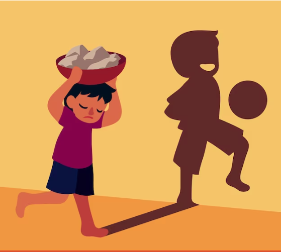

INFANCIA

En tiempos premodernos, la concepción de la infancia era muy diferente a la actual. No existía una idea clara de la infancia como una etapa diferenciada y con características propias. Los niños eran considerados adultos en miniatura, con los mismos derechos y obligaciones que los adultos, aunque con menos fuerza física y experiencia.
Los niños eran considerados seres incompletos, sin derechos propios. En algunas culturas, como la romana, los padres tenían derecho a decidir sobre la vida de sus hijos.
La Iglesia tuvo un papel importante en la protección de la infancia. Se crearon instituciones para acoger a niños abandonados y se promovió la educación religiosa. Sin embargo, la visión de la infancia seguía siendo limitada.
Con el Renacimiento y la Ilustración, comenzó a cambiar la visión de la infancia. Se empezó a reconocer la importancia de la educación y se valoró más la individualidad de los niños.
En resumen, la infancia en tiempos premodernos era muy diferente a la actual. Los niños eran considerados adultos en miniatura, con pocos derechos y muchas obligaciones. La visión de la infancia fue evolucionando a lo largo de la historia, pero no fue hasta la Edad Contemporánea que se reconoció la importancia de la infancia como una etapa diferenciada y con características propias.
El reconocido psicólogo del desarrollo, David R. Shaffer, en su libro "Psicología del Desarrollo: Infancia y Adolescencia", nos ofrece una visión integral y dinámica de la infancia, entendiéndola como una etapa crucial y compleja en el desarrollo humano.
Shaffer enfatiza que la infancia no es simplemente una acumulación de años, sino un período único con cambios interrelacionados en diversos ámbitos:
El desarrollo infantil, según Shaffer, está influenciado por una variedad de factores interdependientes:
La infancia se caracteriza por cambios constantes y significativos en todos los ámbitos del desarrollo. Estas transformaciones están interconectadas, como el desarrollo del lenguaje que influye en el desarrollo social y cognitivo.
Shaffer reconoce que la infancia no es solo una preparación para la edad adulta, sino que tiene un valor intrínseco. Los niños son seres humanos completos con sus propias necesidades, derechos y experiencias.
En resumen, Shaffer define la infancia como un período de desarrollo integral, influenciado por múltiples factores, dinámico y con valor propio. Su enfoque destaca la complejidad y la importancia de esta etapa vital en la formación de un individuo.
Es importante recordar que la comprensión de la infancia evoluciona con el tiempo y que diferentes perspectivas teóricas pueden complementar la visión de Shaffer. Sin embargo, su enfoque sigue siendo relevante y valioso para comprender la complejidad del desarrollo infantil.